Preparation of Alkynes
Acidity of 1-Alynes
Terminal alkynes are remarkably acidic. As we covered when examing acid strenght of an acid, H – A, increases with increasing electronegativity, or electron-attracting capability, of atom A. Electronegativity varies with hybridization. Electrons in s orbitals are more strongly attracted to an atomic nucleus than are electrons in p orbitals. As a consequence, an atom with hybrid orbitals high in s character (e.g., sp, with 50% s and 50% p character) will be slightly more electronegative than the same atom with hybrid orbitals with less s character (sp3, 25% s and 75% p character). This effect is indicated below in the electrostatic potential maps of ethane, ethene, and ethyne. The increasingly positive polarization of the hydrogen atoms is reflected in their increasingly blue shadings, whereas the carbon atoms become more electron rich (red) along the series. The relatively high s character in the carbon hybrid orbitals of terminal alkynes makes them more acidic than alkanes and alkenes. The pKa of ethyne, for example, is 25, remarkably low compared with that of ethene and ethane.
| H3C−CH3 | < | H2C−CH2 | < | HC≡CH | |
| Hybridization: | sp3 | sp2 | sp | ||
|---|---|---|---|---|---|
| pKa | 50 | 44 | 25 |
One of the major differences between the chemistry of alkynes and that of alkenes or alkanes is that a hydrogen bonded to a triply bonded carbon atom of a terminal alkyne is sufficiently acidic that it can be removed by a strong base, such as sodium amide NaNH2 (Table below), to give an acetylide anion.
| H −C≡C−H | + | :NH2 | ⥂ | H−C≡C:− | + | NH3 | Keq = 1013 |
| pKa = 25 (Stronger acid) | (Stronger base) | (Weaker base) | pKa 38 (Weaker acid) |
Other strong bases commonly used to form acetylide anions are sodium hydride and lithium diisopropylamide (LDA).
Na+H−, Sodium hydride [(CH3)2CH]2N− Li+, Lithium diisopropylamide (LDA)
Because water is a stronger acid than acetylene, the hydroxide ion is not a strong enough base to convert a terminal alkyne to an alkyne anion.
| H −C≡C−H | + | HO− | ⥄ | H−C≡C:− | + | H−OH | Keq = 10−9.3 |
| pKa = 25 (Weaker acid) | (Weaker base) | (Stronger base) | pKa 15.7 (Stronger acid) |
The pKa values for alkene and alkane hydrogens are so large (they are so weakly acidic) that neither the commonly used alkali metal hydroxides nor sodium hydride, sodium amide, or lithium diisopropylamide are strong enough bases to remove a proton from alkanes or alkenes.
Alkylation of terminal alkynes
As we have already seen, an acetylide anion is a strong base. An acetylide anion is also a nucleophile; it has an unshared pair of electrons that it can donate to another atom to form a new covalent bond. In this instance, an acetylide anion donates its unshared pair of electrons to the carbon of a methyl or primary haloalkane, and, in so doing, the acetylide nucleophile replaces the halogen atom. This type of reaction is called a nucleophilic substitution. For example, treating sodium acetylide with 1-bromobutane gives 1-hexyne.
Nucleophilic substitution
⟶

+ Na+Br−
Because an alkyl group (in this case a butyl group) is added to a molecule, this type of reaction is also called an alkylation reaction. We limit our discussion of nucleophilic substitution in this chapter to the reactions of acetylide anions with methyl and 1° haloalkanes. We discuss the scope and limitations of nucleophilic substitution in more general terms in Chapter 9. For reasons we discuss in Chapter 9, alkylation of acetylide anions is practical only with methyl and primary halides. Because of the ready availability of acetylene and the ease with which it is converted to a good nucleophile, alkylation of an acetylide anion is the most convenient laboratory method for the synthesis of terminal alkynes, meaning one with the carbon-carbon triple bond at the end of a carbon chain. The process of alkylation can be repeated, and a terminal alkyne can, in turn, be converted to an alkyne with the carbon-carbon triple bond in the middle of a carbon chain. Such an alkyne is usually referred to as an internal alkyne. An important feature of this reaction is that new carbon-carbon bonds are made, allowing the construction of larger carbon back-bones from smaller ones.
Alkynes from Alkenes: Elimination Reactions of Dihalides
To prepare an alkyne from an alkene, the alkene is first treated with 1 mole of either bromine (Br2) or chlorine (Cl2) to give a dihaloalkane. Treating the dihaloalkane with 2 moles of a strong base such as sodium amide (NaNH2) in liquid ammonia [NH3(l)] brings about two successive dehydrohalogenations. Recall that addition of HX to an alkene is called hydrohalogenation; removal of HX from a haloalkane is called dehydrohalogenation. The removal of atoms from adjacent carbons to form an alkene is also called an elimination reaction and is discussed fully in Chapter 9. The following example shows the conversion of 2-butene to 2-butyne.
 trans-2-Butene trans-2-Butene | + | Br2 | ⟶ CH2Cl2 |
2,3-Dibromobutane (meso) | + | 2NaNH2 | NH3(l) ⟶ −33°C |
CH3C≡CCH3 | + | 2NaBr | + | 2NH3 |
With a strong base such as sodium amide, both dehydrohalogenations occur readily. However, with weaker bases, such as sodium hydroxide or potassium hydroxide in ethanol, it is often possible to stop the reaction after the first dehydro-halogenation and isolate the haloalkene.
| 2,3-Dibromobutane (meso) | + | KOH | ethanol ⟶ |  (E)-2-Bromo-2-butene | KBr | + | H2O |
In practice, it is much more common to use a stronger base and go directly to the alkyne.
The following equations show the conversion of 1-hexene to 1-hexyne. Note that 3 moles of sodium amide are used in this sequence. Two moles are required for the double dehydrohalogenation reaction, which gives 1-hexyne. As soon as any 1-hexyne (a weak acid, pK a 25) forms, it reacts with sodium amide (a strong base) to give an alkyne salt. Thus, a third mole of sodium amide is required to complete the dehydrohalogenation of the remaining bromoalkene. Addition of water (a weak acid) or aqueous acid completes the sequence and gives 1-hexyne.
 1-Hexene 1-Hexene | Br2 ⟶ |
1,2-Dibromohexane (a racemic mixture) | 2NaNH2⟶ −2HBr |
1-Hexyne | ⟶ NaNH2 | CH3(CH2)3≡C−Na+ | H2O ⟶ | 1-Hexyne |